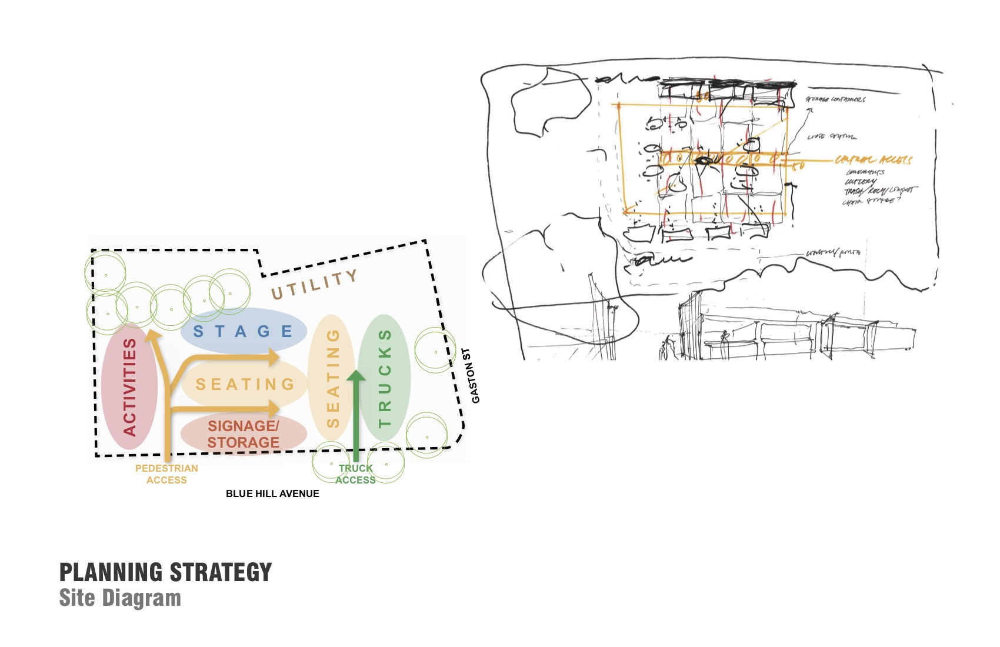

00 Context
Define challenges and goals
The goal of the pop-up food park project is re-design an empty lot in the Greater Grove Hall in Dorchester, MA. Working with the Greater Grove Hall Main Streets, which is a non-profit organization which focuses on economic development, urban planning and community development of the greater Grove Hall area, I co-led the team of eight designers over one month to to create a scalable public gathering space for the community accompanied by food, music, and activities Greater Grove Hall Main Streets is a non-profit organization which focuses on economic development, urban planning and community development of the greater Grove Hall area. Early 2019, we formed a team of 8 designers and partnered with the Greater Rove Hall Main Streets to think about creative solutions for utilizing empty lots and creating community space in the neighborhood. Greater Grove Hall currently has 30% empty land. The Greater Grove Hall neighborhood has a significant number of empty lots. Seeing this as an opportunity for public placemaking, the Greater Grove Hall Main Streets proposed to turn empty lots into pop—up gathering place for food, music, and socializing. Residents and commuters could come to this lot on Fridays after work to get food from various food vendors, listen to music and socialize with friends and neighbors.
Create a scalable public gathering for the community accopanied by food, music, and activities.

01 Process
Define the missing opportunities
During the first meeting with the client, we discussed the overview and history of the neighborhood and came up with the key goals for this project.

Process
The goal of the pop-up food park project is re-design an empty lot in the Greater Grove Hall in Dorchester, MA. Working with the Greater Grove Hall Main Streets, which is a non-profit organization which focuses on economic development, urban planning and community development of the greater Grove Hall area, I co-led the team of eight designers over one month to to create a scalable public gathering space for the community accompanied by food, music, and activities
02 Design
"Kit-of-Part" Strategy
We proposed to use easy-to-get products as mobile furniture so that they can be reused on different sites. Also use lighting and large graphics to attract people and create a sense of event space.

02 Design
Creating a Pop Up Park
We proposed to use easy-to-get products as mobile furniture so that they can be reused on different sites. Also use lighting and large graphics to attract people and create a sense of event space.
